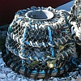

Eune séthée d'pêqu'thie

Au mains 150 membres lus rêunitent dans la salle Parouaissiale dé St. Brélade pour la rêunion mensuelle, vendrédi, 1'28 d'avri 1961.
Lé rapport dé la dreine rêunion fut liu et accepté et chinq nouvieaux membres fudrent êlus.
Ch'fut une séthée exceptionelle sus pus d'un sens, car tous avaient 'té bein surprins d'vaie dans la gazette qué l'Président et sa danme 'taient à célébrer lus neuches d'argent, et n'l'avaient pon dit à personne. L'Député Quérée les felicitit d'la part dé touos les membres, et en même temps lus sou'aitit bein d'autres années ensemblye. Lé Sieur Gibaut ermèrcyit l' Député d'St. Ouën pour ses bouans souhaits et annoncit l'restant d'la séthée dans les mains du Conmité Dramatique souos la présidence du Sieur B. Amy.
Entouor la mé

Ch'fut eune séthée concernée entouor la mé, la pêqu'thie et du paisson, et la strade 'tait bein arrangie auve du vrai, des cliavieaux et en driéthe y'avait eune muthaille auve un drannet êtendu d'ssus.
Lé Sieur C. P. Billot nos racontit eune histouaithe entouor un v'yage ès Ecréhos, Colin Le Cornu ercitit eune plièche entouor un janne garçon qu'avait décidé d's'en aller en mé et l'Sieur W. du Tôt chantit la vielle chanson, “Bouan Vent". Auprès, né v'là la janne Ruth Amy qu'entrit la salle par iune des portes dé driéthe auve eune pann'lée d'paisson, et souotre lyi, les Mêssieux G. Le Masurier, G. Perchard, B. Amy et l'Chentnyi M. de la Haye, trainnant un baté pliein d'paisson. Ruth chantit la chanson, "Etes-ous par là, Missis?” et l'Sieur Le Masurier s'mint à vendre lé paisson à l'encan - et y en'avait pour touos les gôuts! Des homards, touos frais d's Ecréhos l'matin, des pihangnes, des bénits, des chuchettes (ou bobbes) et des vlicots, tout fut bein vendu dans rein d'temps !
Mme. Eileen Le Sueur racontit s'n experience quand oulle eut eune hétheque dans la gorge.
Helen Perchard et Sadie Le Sueur chantitent eune aut' belle chanson et l'Sieur du Tôt ercitit. Auprès, les mêssieux qui 'taient ervénus d'la pêque nos chantitent plusieurs chansons auve les membres à jouaindre dans les r'frains. Ches chansons 'chin finissaient l'divèrtiss'ment, mais y'avait des longues tablyes toutes prêtes pour servi l'bouan fricot qui nos attendait.
Présentations
Dans l'entrétemps, lé Président et sa danme fudrent d'mandés dé v'nin sus la strade et la ségrétaithe, au nom de L'Assembliée, présentit un magnifique touffet d'flieurs à Mme. Gibaut et eune belle boutonniéthe au Président, et la janne Dénize de la Haye lus en présentit un aut'e dé la part du Conmité Dramatique et l'Président dit tchiques patholes dé r'merciements.
Lé fricot
Les danmes du Conmité Dramatique et les danmes dé St Brélade à lus aidgi lus mintent tout d'suite à servi l'souper d'pihangnes, vlicots et d'la bouanne mouothue rôtie, auve des beurées d'pain et d'gâche à fouée, suivie par d'la galette à vrai et des p'tites gâches. Tous lus mintent à mangi à “tique dé corps", et à la fin dithaient qué ch'tait "Un raide bouan fricot".
Viyiz étout: